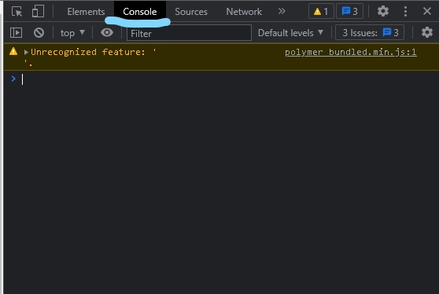

How To Open Console
Step 1 - Right Click And Select Inspect Option

Step 2 - Left Click And Select The Console Option

How To Print In Console
Step 1 - Make A Basic Html Page
Step 2 - Make A Script Tag
Step 3 - Using The Tag Write Console.log(" ")
In The Tag And Enter Your Desired Text In The " "